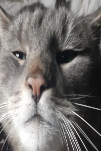
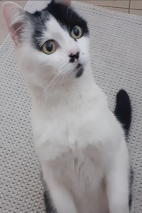
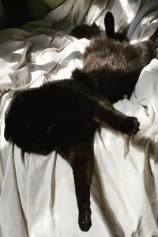
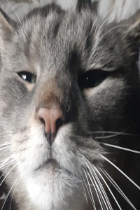
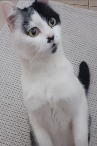
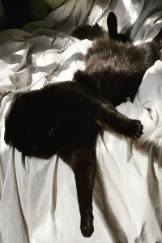

Furget about it!!
Welcome to the world of furry creatures from the Kingdom of Mount Nebu. They all eat, sleep and do other wondrous things on a daily basis.
 





Beware of Fureigners
- Birdy, aka Birdichku -- the dog, 1 and only
- Markus, aka Markus the Carcass -- cat #1
- Ibby, aka Izzy, Libuse, Ibby-Bibby -- cat #2
- Gizmo, aka 'G-Man' -- cat #3